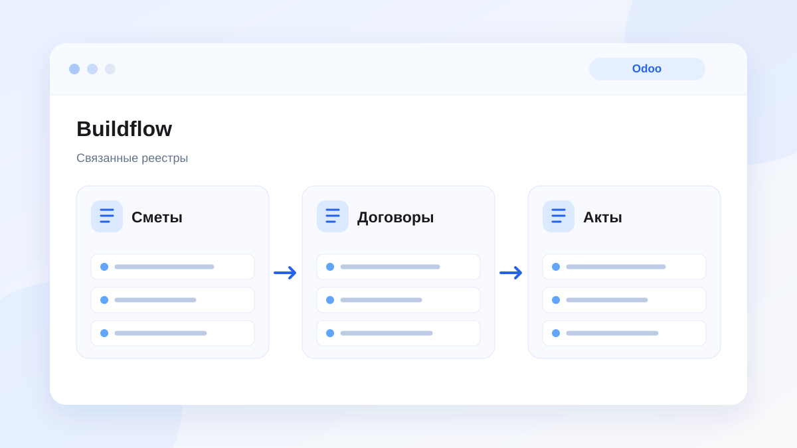

Внедрение ERP · строительство
Buildflow: Odoo 17 вместо разрозненных таблиц
MVP на Odoo 17 Community: реестры смет, договоров и актов, роли, документы и дашборд вместо разрозненных Google Таблиц.
Читать кейс → Связанная услуга: внедрение Odoo